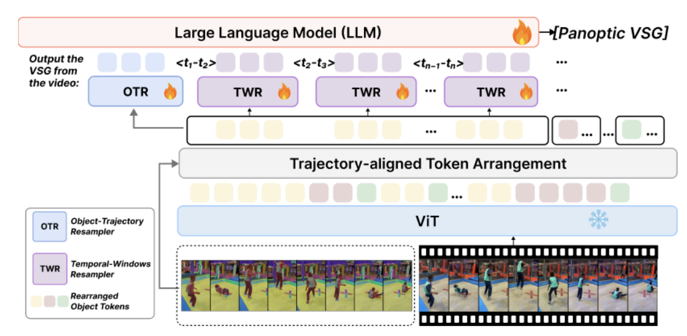
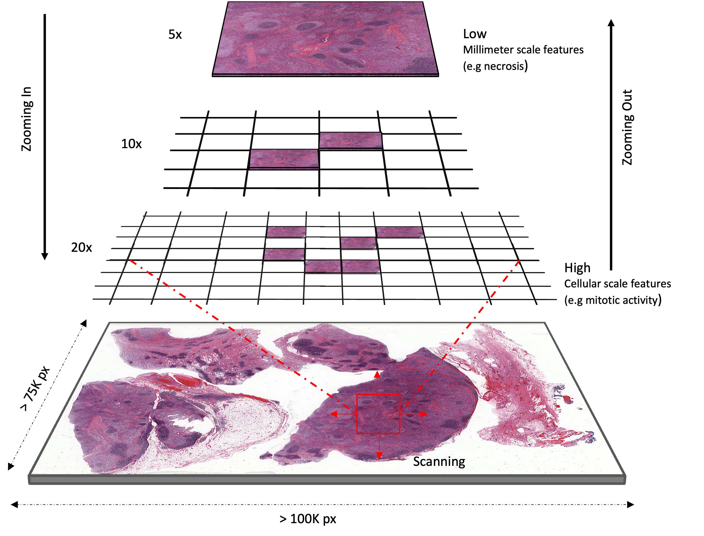
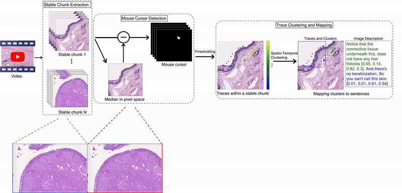
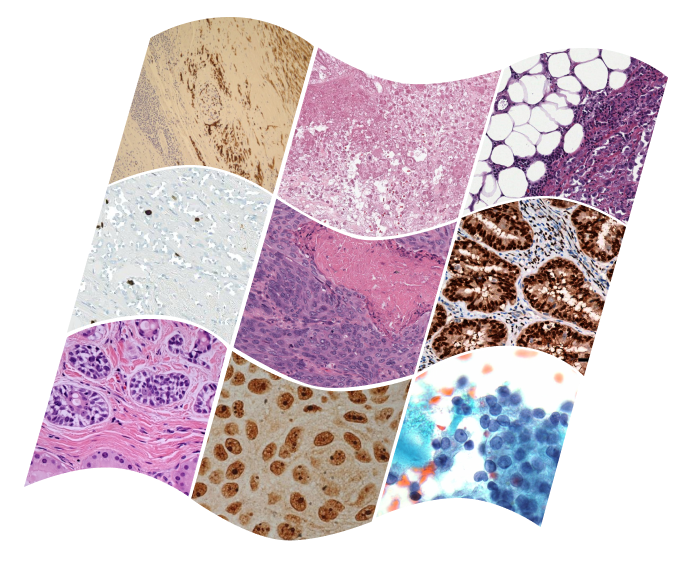

Wisdom O. Ikezogwo
I am a final-year PhD candidate in the RAIVN Lab in Computer Science at the University of Washington, Seattle, advised by Ranjay Krishna and Linda Shapiro, and a student researcher in the OE-Science team at the Allen Institute for Artificial Intelligence (AI2). I have conducted research with Karim Bouyarmane at Amazon (2025), Rick Chang at Apple (2024), and Nick Chen at Mayo Clinic (2023 to 2024). I earned my B.Sc. at Obafemi Awolowo University, where I was advised by Kayode P. Ayodele.
graduating fall 2026 · on the research job market
My research asks what it takes to build intelligence trustworthy enough to act in high stakes visual domains such as medical imaging. I study multimodal representation and generative modeling: how models form rich, robust, and grounded connections across modalities and scales, learn from scarce or noisy supervision, reason under uncertainty, and improve through interaction. I care about the full arc, from curating the right data, to grounding what a model perceives, to reasoning over it, to closing the loop with feedback and action. Right now, my research interests are in visually grounded reasoning and in improving world/action models.
selected publications






